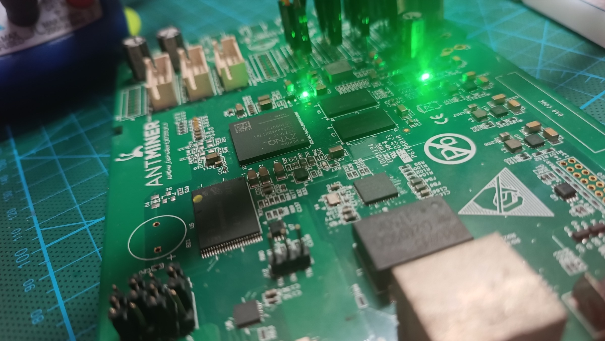

1. The board
The Antminer S9 was a Bitcoin mining machine. Its control board (marked AntMiner ControlBoard XC7010 V1.01) was the "brain" that talked to the hash boards. Without the hash boards it is a very capable small computer with an FPGA inside: a cheap development board.

| Part | What it is |
|---|---|
| Zynq XC7Z010-1 CLG400 | The main chip: 2 ARM processors + an FPGA, in one package (400 balls) |
| 2 × DDR3 chips | 512 MB working memory (RAM) in total |
| microSD slot | Where our Linux lives. The board starts from it (boot jumpers on "TF card") |
| NAND flash | Original Bitmain firmware. We do not touch it (it stays as a backup) |
| Ethernet (RJ45) | Network, 100 Mbit/s. A PHY chip at MDIO address 1 connects the Zynq to the cable |
| UART header J12 | Serial console (TX, GND, RX), 3.3 V, 115200 baud |
| JTAG header J10 | For Vivado's hardware debugger (optional) |
| 4 LEDs | Wired to the FPGA part (pins F16, L19, M19, M17), active low (0 = on) |
| Status LED (red/green), small LED, buzzer, 2 buttons | On the ARM side (MIO37/38, MIO15, MIO39, MIO47/51). Green = Ardzy ready, red = safe mode |
| 9 hash-board connectors | Now free input/output pins for your own circuits (plMiner0 to plMiner8) |
| 6 fan connectors, I2C | One shared fan PWM pin, 6 speed (tach) inputs; two I2C buses on pins 3/4 of the hash-board connectors |
| 12 V input (6-pin PCIe) | Power. The board makes all its lower voltages itself |
2. The Zynq chip: two worlds in one
A Zynq is two different things glued together on one piece of silicon:
3. How the two worlds talk
| Link | Direction | What it is used for |
|---|---|---|
| M_AXI_GP0 (AXI bus) | ARM → FPGA | The ARM reads and writes registers inside your FPGA design. Addresses start at 0x4000_0000. Example: an AXI GPIO at 0x4120_0000; writing 5 there turns LEDs 0 and 2 on. |
| FCLK0..3 (clocks) | ARM → FPGA | Clock signals made by the ARM side. Ardzy uses FCLK0 = 100 MHz. The board has no separate FPGA crystal, so your design takes its clock from here. |
| IRQ_F2P (interrupts) | FPGA → ARM | Your logic can "ring a bell" for the program (Ardzy: the UIO driver + UIO.wait() in Python). |
| HP / ACP ports | FPGA → memory | Fast direct memory access (DMA) for big data like samples or video. Advanced. |
| EMIO | both | Route PS peripherals (extra UART, SPI, I2C) through FPGA pins. |
From Python on the board, a register is just a memory address:
from ardzy import MMIO
gpio = MMIO(0x41200000) # the base address shown in Vivado's Address Editor
gpio.write(0, 0b0101) # LEDs 0 and 2 on
print(gpio.read(0))4. The memory map
The ARM sees everything (RAM, peripherals, your FPGA registers) as addresses in one big 4 GB space:
5. Connectors and pins
| Signal | FPGA pin(s) | Notes |
|---|---|---|
| LED 0..3 | F16, L19, M19, M17 | LVCMOS33. In Ardzy examples: leds[3:0] (file leds.xdc) |
| plMiner0 | T11, T12, U12, T10 | 4 free I/O pins per connector, 3.3 V |
| plMiner1 | R19, V12, W13, V13 | |
| plMiner2 | T14, P14, R14, T15 | |
| plMiner3 | Y16, W14, Y14, Y17 | |
| plMiner4 | T16, V15, W15, U17 | (plMiner5..8: see antminer_s9.xdc in ZynqProjects) |
| UART console | J12: TX, GND, RX | PS UART1 = Linux ttyPS0. Use a 3.3 V USB-UART adapter (never 5 V). Cross TX/RX. |
| JTAG J10 | 2=VREF 3.3V, 4=TMS, 6=TCK, 8=TDO, 10=TDI, 14=SRST, odd pins GND | For a Xilinx/Digilent cable |
6. How the board starts (boot)
When you switch on, the chip goes through a chain of small programs. Each one prepares the next:
Typical time from power-on to the login/web page: about 15 to 25 seconds (the first boot after flashing takes longer).
7. The memory chips (DDR3)
DDR3 memory needs exact settings: how many address lines it has, and timing values in nanoseconds.
The first boot stage writes these into the memory controller (registers at 0xF800_6000).
We found that the Vivado hardware file used before (the old .xsa) differs from the proven boot loader in exactly 2 values:
| Register | Proven boot loader | Old Vivado file | Meaning |
|---|---|---|---|
0xF800_6044 | 0x0F666666 | 0x0FF66666 | Row address bit 14 used or not: 15 row bits = a 1 GB map (4 Gbit chips), 14 row bits = a 512 MB map (2 Gbit chips) |
0xF800_6014 | 0x0004285B | 0x0004159B | tRFC refresh time: 161 clocks = 302 ns (4 Gbit chips need 260 ns) or 86 clocks = 161 ns (2 Gbit chips need 160 ns) |
8. Quick facts
| Chip | Xilinx Zynq-7000 XC7Z010-1CLG400 (Vivado part xc7z010clg400-1) |
| Chip ID (IDCODE) | 0x03722093 (read from the running chip). A 7Z020 would be 0x03727093 |
| Processors | 2 × ARM Cortex-A9, up to 667 MHz, with NEON and FPU |
| RAM | 512 MB DDR3 (2 chips) |
| FPGA | 17,600 LUTs, 35,200 flip-flops, 60 × 36 Kb block RAM, 80 DSP slices, XADC (temperature/voltage) |
| Reference clock | 33.333 MHz crystal (PS_CLK) |
| Console | UART1, 115200 8N1, Linux device ttyPS0 |
| Network | Gigabit-capable MAC (GEM0) + PHY at MDIO address 1, linked at 100 Mbit/s. Each board has its own MAC address. |
| Xilinx documents | DS187 (datasheet), DS190 (overview), UG585 (Technical Reference Manual: everything about the PS) |